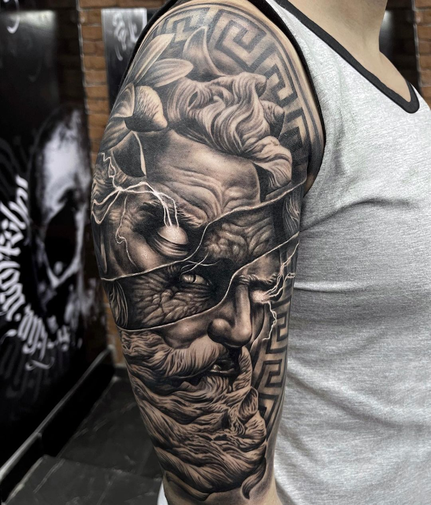
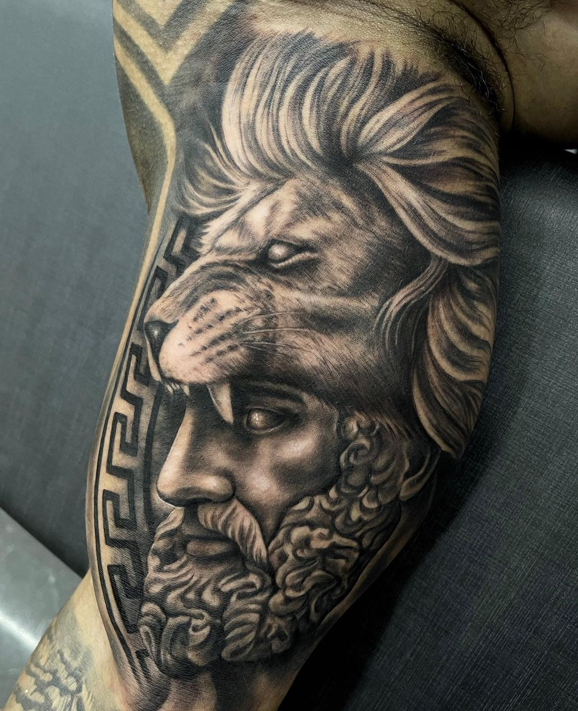
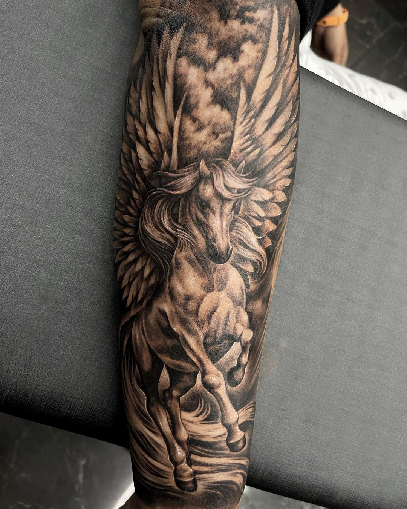
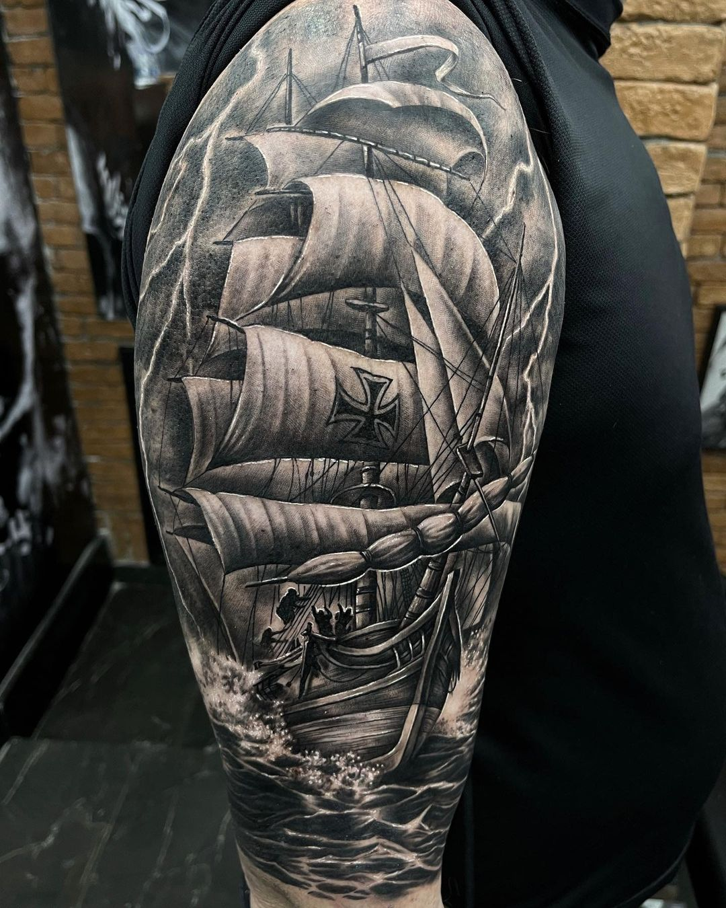
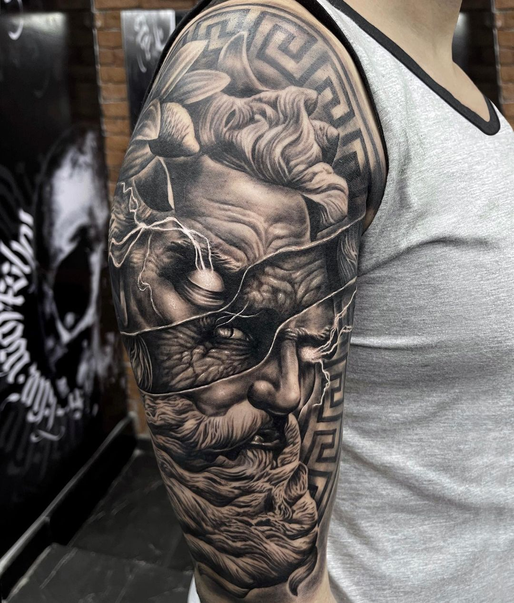
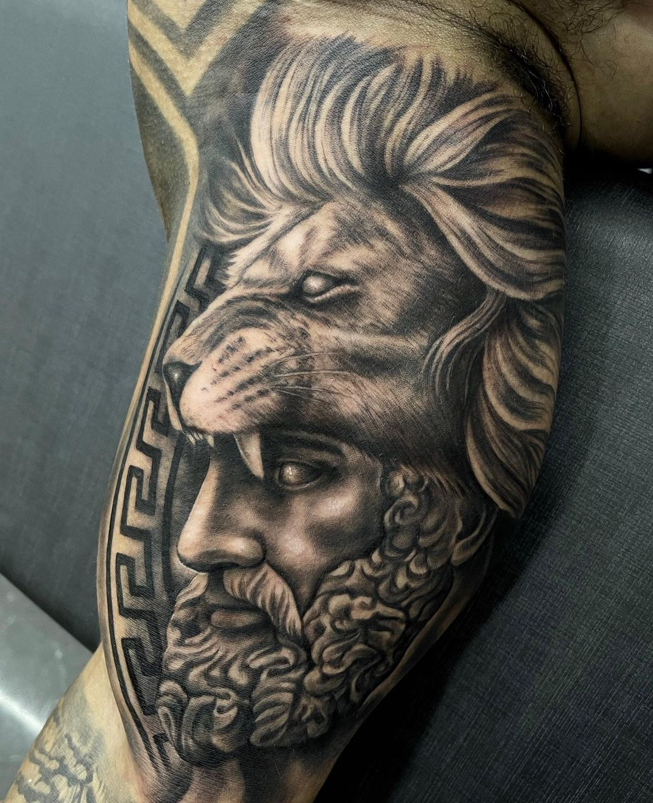
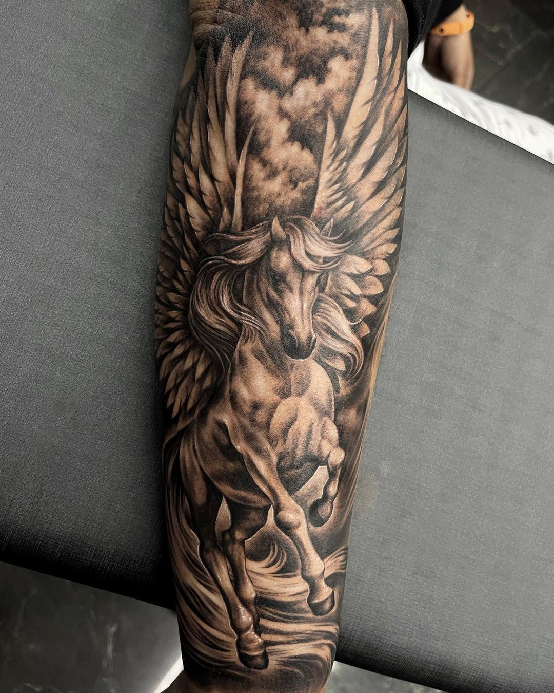
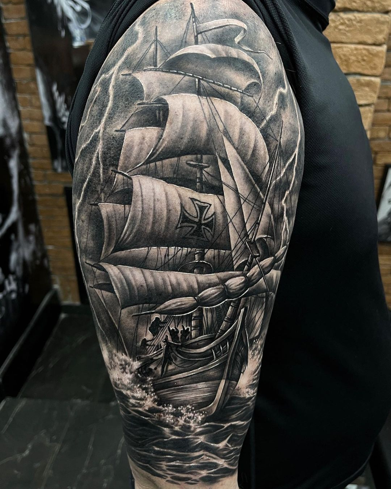

.jpeg)
 







Você tatuador iniciante ou não, quer aprender na prática como melhorar seus trabalhos?. Então não perca essa super promoção de natal e invista no seu conhecimento com esse Workshop onde eu ensino do básico ao avançado de como melhorar suas tatuagens e com isso agradar e gerar o máximo de clientes possíveis. E o melhor de tudo é que você terá acesso ilimitado podendo assim assistir quantas vezes quiser para consolidar seu conhecimento e gerar resultados cada vez melhores.

"Meu nome é Alexandre Lourenço. Desde pequeno gostava de desenhar, inclusive sonhava em algum dia ser um desenhista da Disney, porém durante o passar dos anos não me via ganhando a vida com arte. Comecei a conhecer o mundo da tatuagem visitando studios como cliente, inclusive sempre que ia ao studio gostava de mostrar ao tatuador meus desenhos no papel, ele sempre me elogiava e dizia que eu tinha potencial para me tornar tatuador algum dia. Como todo inicio de carreira, não foi fácil, comecei a tatuar no meu quarto, ainda na casa da minha mãe. Um ano depois decidi me mudar para minha própria casa e comecei a atender lá mesmo. Comecei a conquistar uma boa clientela, foi quando decidi que deveria me mudar para uma loja, um studio de verdade. Continuei evoluindo e crescendo, e fiquei nesta loja pouco mais de um ano, até me mudar para um studio ainda maior. Hoje tenho um studio localizado em um dos melhores bairros da minha cidade, com outros tatuadores trabalhando comigo, tatuadores esses, que inclusive aprenderam a tatuar comigo do zero, e hoje são grandes profissionais. A tempos me sinto feliz e realizado nesse ramo, de modo que não consigo me visualizar fazendo outra coisa na vida."